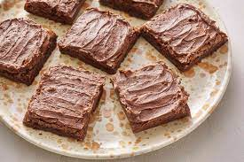
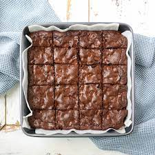
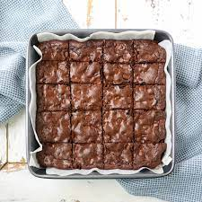

Double Chocolate Cookies
Origin: Michigan Source: Family Recipe Category: Dessert
My daughter learned to make these cookies at a baking camp at Zingermanns and has tweaked the recipe to fit the taste buds of her siblings. They are extremely sugary so the salt helps to balance it. Note, these cookies are best eaten very quickly.
Recipe Ingredients
- Unsalted butter
- Granulated Sugar
- Packed light or dark brown sugar
- Large egg
- Pure vanilla extract
- Semi-sweet chocolate chunks (melted)
- All-purpose flour
- Natural unsweetened cocoa powder
- Baking soda
- Salt
- Semi-sweet chocolate chunks
Recipe Steps
- 1. In a mixing bowl cream together the butter, granulated sugar, and brown sugar
- 2. Add the egg and vanilla extract and beat well
- 3. Add the melted chocolate
- 4. In a separate bowl combine the flour, baking soda, cocoa powder and salt
- 5. Combine the wet and dry ingredients
- 6. Add the unmelted chocolate chunks.
- 7. Form 15 cookies and place on a baking sheet.
- 8. Cook for 12 to 13 minutes at 350 degrees.
Additional Food images


Matcha Cookies
Origin: Japan Source: https://www.justonecookbook.com/green-tea-white-chocolate-cookies/ Category: Dessert
These cookies have the perfect flavor balance of the earthiness from the matcha and the sweetness and creaminess from the white chocolate chips. They are crispy and sweet, perfect for an afternoon snack or dessert. Enjoy with a cup of tea!
Recipe Ingredients
- All purpose flour
- Matcha powder
- Unsalted butter
- Kosher salt
- Confectioners sugar
- Egg yolks
- White chocolate chips
Recipe Steps
- 1. Combine flour and matcha powder in large bowl
- 2. Sift the flour and matcha powder
- 3. Beat softened butter until smooth and creamy
- 4. Add salt and blend
- 5. Add sugar and beat until soft and light
- 6. Add egg yolks and mix until well combined
- 7. Gradually add flour and matcha mixture and mix until well combined
- 8. Add chocolate chips and mix until incorporated
- 9. Divide dough into two pieces. Shape each piece into cylinders about 1.5in in diameter
- 10. Wrap logs in plastic wrap and chill in fridge for at least two hours
- 11. Slice into ⅓ inch rounds and place on a baking tray lined with parchment paper
- 12. Bake at 350 degrees for 15 minutes
Additional Food images


Mom's brownie recipe
Origin: American Source: Family Recipe Category: Dessert On weekends, when I was younger, my mom and I would make these brownies together. They were always my favorite dessert and I still make them to this day, but my mom still makes them the best. My favorite part about them is that they are so easy to make!
Recipe Ingredients:
- Sugar
- Flour
- Butter
- Eggs
- Cocoa Powder
- Vanilla
- Baking Powder
- Salt
Recipe Steps:
- 1. Preheat oven to 375 degrees
- 2. Mix together in a medium size bowl Sugar, Flour, Cocoa Powder, Baking Soda and Salt.
- 3. Beat eggs into the dry ingredients.
- 4. Slowly add in the butter after the eggs are fully combined and add vanilla.
- 5. Put the batter into a greased baking sheet and bake for 20-30 minutes and enjoy!
Additional Food images

 

Homemade Chicken Tikka Masala Recipe
Origin: India Source: https://tasty.co/recipe/homemade-chicken-tikka-masala Category: Main Dish
My daughter learned to make these cookies at a baking camp at Zingermanns and has tweaked the recipe to fit the taste buds of her siblings. They are extremely sugary so the salt helps to balance it. Note, these cookies are best eaten very quickly.
Recipe Ingredients
Chicken Marinade
- 3 boneless, skinless chicken breasts
- ½ cup plain yogurt
- 2 tablespoons lemon juice
- 6 cloves garlic, minced
- 1 tablespoon minced ginger
- 2 teaspoons salt
- 2 teaspoons ground cumin
- 2 teaspoons garam masala
- 2 teaspoons paprika
Sauce
- 3 tablespoons oil
- 1 large onion, finely chopped
- 2 tablespoons minced ginger
- 8 cloves garlic, minced
- 2 teaspoons ground cumin
- 2 teaspoons ground turmeric
- 2 teaspoons ground coriander
- 2 teaspoons paprika
- 2 teaspoons chili powder
- 2 teaspoons garam masala
- 1 tablespoon tomato puree
- 3 ½ cups tomato sauce
- 1 ¼ cups water
- 1 cup heavy cream
- ¼ cup fresh cilantro, for garnish
- cooked rice, for serving
- naan bread, for serving
Recipe Steps
- 1. Slice the chicken into bite-sized chunks.
- 2. Combine the cubed chicken with the yogurt, lemon juice, garlic, ginger, salt, cumin, garam masala, and paprika and stir until well-coated.
- 3. Cover and refrigerate for at least 1 hour, or overnight.
- 4. Preheat the oven to 500°F (260°C). Line a high-sided baking pan or roasting tray with parchment paper.
- 5. Place the marinated chicken pieces on bamboo or wooden skewers, then set them over the prepared baking pan, making sure there is space underneath the chicken to help distribute the heat more evenly. Bake for about 15 minutes, until slightly dark brown on the edges.
- 6. Make the sauce: Heat the oil in a large pot over medium heat, then sauté the onions, ginger, and garlic until tender but not browned.
- 7. Add the cumin, turmeric, coriander, paprika, chili powder, and garam masala and stir constantly for about 30 seconds, until the spices are fragrant. Stir in the tomato puree, tomato sauce, and 1 ¼ cups of water, then bring to a boil and cook for about 5 minutes. Pour in the cream.
- 8. Remove the chicken from the skewers and add to the sauce, cooking for another 1-2 minutes. Garnish with cilantro and serve over rice or alongside naan bread.
- 9. Enjoy!
Additional Food images